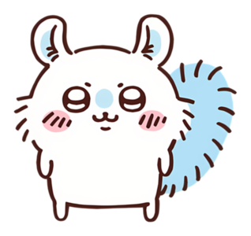
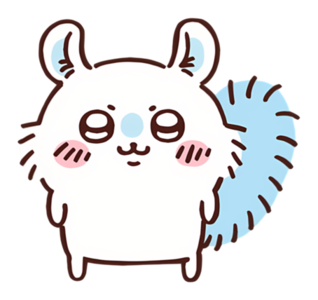

Frequently Asked Questions
What is Chiikawa?
Chiikawa is a popular Japanese character series featuring cute small creatures living everyday lives.
How can I watch the anime?
You can watch the Chiikawa anime on various platforms like YouTube or local streaming services.
Where can I buy goods?
Goods are available online and in official stores across Japan. Check the "Goods" section for details.
Are there English subtitles available?
Yes, many platforms offer English subtitles for Chiikawa episodes. Check the settings on your video player.
Can Chiikawa survive in the wild?
Probably not. Unless the wild includes snacks, friends, and occasional screaming. Then maybe.
Who are the main characters?
The main characters include Chiikawa, Hachiware, and Usagi—each with their own unique and adorable personality.